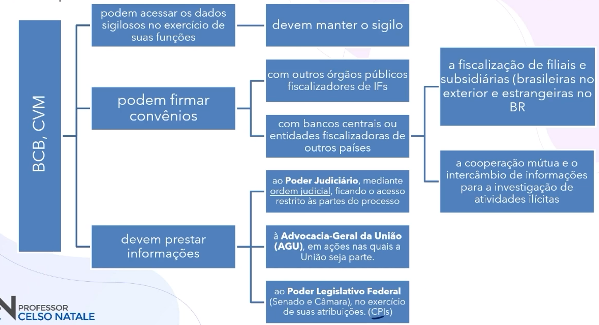

Aula 00 - Sistema Financeiro Nacional (SFN)
Órgãos Normativos
Determinam regras gerais para o bom funcionamento do sistema.
- CMN - Conselho Monetário Nacional
- CNSP - Conselho Nacional dos Seguros Privados
- CNPC - Conselho Nacional de Previdência Complementar
Instituições Supervisoras
Buscam garantir que as regras dos normatizadores sejam seguidas.
- BCB - Banco Central do Brasil
Mercados de Moeda, Crédito e Câmbio - CVM - Comissão de Valores Mobiliários
Mercado de Capitais - Susep - Superintendência de Seguros Privados
Mercado de Seguros Privados - Previc - Superintendência Nacional de Previdência Complementar
Mercado de Previdência Fechada
Instituições Operadoras
Lidam diretamente com o público, ofertando produtos e prestando serviços financeiros.
Mercado Financeiro
Permite o fluxo de recursos entre poupadores e tomadores.
Mercado Monetário - Controle dos meios de pagamentos e da liquidez da Economia.
Mercado de Crédito - Créditos para consumo e capital de giro nas empresas.
Mercado de Câmbio - Transações com moedas estrangeiras.
Mercado de Capitais - Investimentos em projetos e empresas, financiamentos e outras operações.
Sistema Financeiro Nacional
| Órgãos normativos | CMN | CNSP | CNPC | ||
|---|---|---|---|---|---|
| Supervisores | BCB | CVM | Susep | Previc | |
| Operadores Subsistema de intermediação |
Bancos | Administradoras de Consórcio | Bolsa de Valores | Seguradoras | Entidades Fechadas de Previdência Complementar |
| Cooperativas de Crédito | Caixa Econômica | Bolsa de Mercadorias e Futuros | Resseguradoras | ||
| Instituições de Pagamento | Outras | Entidades abertas de previdência | |||
| Agência de Fomento | Corretoras e Distribuidoras | Sociedades de capitalização | |||
Aula 01 - Moeda
Conceito: ativo que pode ser utilizado de forma imediata para realizar transações.
Funções:
- Reserva de valor
- Unidade de conta
- Meio de troca
Atributos:
- Baixo custo de estocagem
- Baixo custo de transação
- Difícil de falsificar
- Alta durabilidade
- Divisibilidade
- Transportável
- Manuseável
- Homogeneidade
Tipos:
- Moeda-mercadoria (sal; conchas; gado; cigarros)
- Padrão-ouro (trocada por ouro a taxa fixa)
- Fiduciária (confiança)
- Escritural (saldo em conta corrente)
Mercado Monetário
Demanda por Moeda (Motivos)
Transação
- Para realizar transações comerciais
- Varia na mesma direção que o nível de renda
- Função: meio de troca
Precaução
- Proteger contra imprevistos
- Varia na mesma direção que o nível de renda
- Função: reserva de valor
Especulação
- Para aproveitar oportunidades de investimento
- Se os juros estão baixos, a demanda por moeda é alta
- Se os juros estão altos, a demanda por moeda é baixa
- Se há expectativa de aumento dos juros, a demanda é alta
- Se há expectativa de queda dos juros, a demanda é baixa
Emissão e Circulação
Aula 03 - Produtos Bancários
Cartões
Os cartões, às vezes chamados de dinheiro de plástico, são instrumentos de pagamentos que facilitam a realização de transações.
Evolução
Captura manual > Tarja Magnética > Chip > NFC (aproximação)
Cartões de Débito
Ele tem duas funções:
- Autoatendimento:
Caixas eletrônicos para realização de operações como consultas, saques, transferências, pagamentos, entre outras. - Comércio:
Utilizado para realizar compras ou pagamentos à vista em estabelecimentos comerciais. (passar no débito)
Cartões de Crédito
Existem dois tipos de cartões de crédito: Básico e Diferenciado.
| Cartão Básico | Cartão Diferenciado | |
|---|---|---|
| Nacional ou Internacional | ✔ | ✔ |
| Serviços básicos (consulta de fatura, alteração data de vencimento) | ✔ | ✔ |
| Anuidade barata ou isenta | ✔ | ✖ |
| Programa de recompensas (milhas ou pontos) | ✖ | ✔ |
| Serviços diferenciados (seguro viagem, seguro passagem, compram a passagem pra você) | ✖ | ✔ |
São tarifas do cartão de crédito:
- Emissão de 2ª via
Quando a culpa for do cliente. (Perda, quebrou e etc) - Saques
É cobrado tarifa para sacar com cartão de crédito. - Pagamento de contas
Pagar boleto com cartão de crédito também cobra juros. - Avaliação emergencial de crédito
Quando faz compras que passa do limite disponível, é cobrado uma taxa pelo limite a mais.
Crédito Rotativo
- Pagamento acima do mínimo da fatura e abaixo do total
- Gera encargos e juros
- Deve ser quitado em até 30 dias
Crédito Direto ao Consumidor (CDC)
Características:
- Produto destinado ao consumidor final para aquisição de bens ou serviços.
Ex: Financimento de automóveis, tratamento estético, empréstimos pessoais. - O bem pode ou não ser garantia do crédito.
- Por se tratar de operação de crédito, incide IOF.
- Deve permitir pagamento antecipado com deságio, tirando os juros das últimas parcelas.
Consórcio
Banco Central do Brasil
- Normatização, autorização, supervisão.
Administradoras de Consórcios; instituições não financeiras
- Grupos: reunião de pessoas para autofinanciamento
- Bem de referência: determina a categoria e o valor das contribuições.
- Consorciado: quem adquire uma ou mais cotas em um grupo.
- Contemplação
- Sorteio: prioridade na assembleia
- Lance: após o sorteio, se houver recursos
- Desistência
- Em até 7 dias: recebe devolução imediata.
Poupança
Características
Isenção de impostos + Baixo risco + Simples = Preferida dos brasileiros
| Remuneração da Poupança (mêsversário) | ||
| 30 dias | 90 dias | |
| Pessoa Física | PJ sem fins lucrativos | PJ com fins lucrativos |
| Rentabilidade da Poupança (juros) | ||
| Regra nova | Regra antiga | |
| Selic > 8,5% a.a. | Selic <= 8,5% a.a. | Sempre |
| 0,5% a.m. + TR | 70% da Selic + TR | |
Capitalização
Aplicação em que o subscritor paga prestações, ganhando o direito de concorrer a prêmios e, ao final do prazo estipulado, recuperar o valor investido (parcial ou totalmente), corrigido com juros.
| Tipos de prestações | ||
| Continuada | Única Valor é pago uma única vez |
|
| Proporcional pagamentos apenas durante parte da vigência |
Mensal pagamentos mensais durante toda a vigência do título |
|
Quota de capitalização: percentual da contribuição destinado à constituição de capital referente ao direto de resgate.
Quota de carregamento: percentual da contribuição destinado aos custos de despesas com corretagem, colocação e administração do título de capitalização, emissão, divulgação, lucro da sociedade de capitalização e eventuais despesas relativas ao custeio da contemplação obrigatória e da distribuição de bônus.
Quota de sorteio: percentual da contribuição destinado a custear os sorteios, se previstos no plano.
Seguros
Conselho Nacional de Seguros Privados (CNSP)
Competências:
- Fixar as diretrizes e normas da política de seguros privados;
- Regular a constituição, organização, funcionamento e fiscalização dos que exercerem atividades no mercado de seguros privados;
- Estipular índices e demais condições técnicas sobre tarifas, investimentos e outras relações patrimoniais a serem observadas pelas Sociedades Seguradorasoperador;
- Fixar normas gerais de contabilidade e estatística a serem observadas pelas Sociedades Seguradoras;
- Delimitar o capital das sociedades seguradoras e dos resseguradores;
- Estabelecer as diretrizes gerais das operações de Resseguroseguro da seguradora;
- Disciplinar as operações de co-seguro+ de uma seguradora;
- Prescrever os critérios de constituição das Sociedades Seguradoras, com fixação dos limites legais e técnicos das operações de seguro;
- Disciplinar a corretagem de seguros e a profissão de corretor;
Composição:
- Presidente: Ministro de Estado da Fazenda
- Presidente substituto: Superintendente da Superintendência de Seguros Privados - Susep
- Representante do Banco Central do Brasil - BCB
- Representante da Comissão de Valores Mobiliários - CVM
- Representante do Ministério da Justiça e Segurança Pública
- Representante do Ministério da Previdência Social
Superintendência de Seguros Privados (Susep)
Autarquia federal vinculada ao Ministério da Fazenda, que atua como executora da política traçada pelo CNSP.
Competências
- Fiscalizar a constituição, organização, funcionamento e operação das Sociedades Seguradoras, de Capitalização, Entidades de Previdência Privada Aberta e Resseguradores;
- Atuar no sentido de proteger a captação de poupança popular no mercado de seguros;
- Zelar pela defesa dos interesses dos consumidores dos mercados supervisionados;
- Promover o aperfeiçoamento das instituições e dos instrumentos operacionais a eles vinculados, com vistas à maior eficiência do Sistema Nacional de Seguros Privados e do Sistema Nacional de Capitalização;
- Promover a estabilidade dos mercados sob sua jurisdição, assegurando sua expansão e o funcionamento das entidades que neles operem;
- Zelar pela liquidez e solvência das sociedades que integram o mercado;
- Disciplinar e acompanhar os investimentos daquelas entidades;
- Cumprir e fazer cumprir as deliberações do CNSP;
- Prover os serviços de Secretaria-Executiva do CNSP.
Sociedades Seguradoras
Instituições que atuam no mercado de seguros e se responsabilizam, perante os contratantes de seguros (segurados), por meio de contratos de seguros.
São remuneradas com parte dos prêmios pagos pelos segurados, enquanto outra parte é separada no chamado fundo de reserva técnica, sendo investida para garantir a cobertura das indenizações.
As aplicações da reserva técnica se sujeitam às normas do CMN.
São constituídas sob a forma de Sociedades Anônimas.
Também podem ser "Cooperativas" (em vez de S.A.), mas nesse caso poderão operar apenas com seguros agrícolas, de saúde e de acidentes do trabalho.
Previdência
Reserva financeira realizada no presente para suprir uma necessidade futura prevista.
| Previdência Complementar | ||
| Aberta | Fechada | |
| Operador | Entidade Aberta de Previdência Complementar | Entidade Fechada de Previdência Complementar |
| Natureza jurídica | Sociedade Anônima | Fundação ou Sociedade Civil |
| Fins lucrativos | Sim | Não |
| Normatizador | CNSP | CNPC |
| Supervisor | Susep | Previc |
| Participante | Qualquer pessoa física (plano individual) Pessoas físicas vinculadas a pessoas jurídicas contratantes (plano coletivo) | Apenas funcionários do instituidor ou patrocinador |
| Modalidades | Contribuição definida, benefício definido ou contribuição variável | Apenas contribuição definida no caso de associados ou membros de pessoas jurídicas de caráter profissional, classista ou setorial |
| Portabilidade | Sim | Apenas mediante cessação do vínculo empregatício |
Previdência Complementar Aberta
Planos que possibilitam a acumulação de recursos durante determinado período para proporcionar uma renda futura, que poderá ser resgatada de uma só vez ou recebida em parcelas (como uma aposentadoria).
| PGBL Plano Gerador de Benefício Livre |
| contribuições abatidas do imposto de renda, em até 12% da renda bruta tributável; |
| cobranças de IR apenas no resgate, sobre a quantia total resgatada ou sobre as parcelas recebidas como renda. |
| VGBL Vida Gerador de Benefício Livre |
| incide Imposto de Renda (IR) sobre os valores investidos periodicamente |
| não incide o imposto sobre o resgate ou sobre o pagamento parcelado do benefício |
| inclue seguro de vida |
Aula 10 - Sigilo Bancário: Lei Complementar nº 105/2001 e suas alterações
Introdução
A Lei de Sigilo Bancário dispõe sobre o sigilo das operações de instituições financeiras.
| bancos de qualquer espécie | DTVM e CTVM | sociedade de crédito, financiamento e investimentos; | sociedades de crédito imobiliário |
| cooperativas de crédito | sociedades de arrendamento mercantil* | administradoras de mercado de balcão organizado* | administradoras de cartões de crédito* |
| associações de poupança e empréstimo | bolsas de valores e mercadorias futuros; | entidades de liquidação e compensação* | outras sociedades que assim venham a ser consideradas pelo CMN |
só são instituições financeiras para a Lei Complementar 105
não podem divulgar ou compartilhar dados sobre seus clientes e as operações que eles realizam
Exceções
- a troca de informações entre instituições financeiras, para fins cadastrais, inclusive por intermédio de centrais de risco, observadas as regras do Conselho Monetário Nacional e do Banco Central do Brasil;
- o fornecimento de informações constantes de cadastro de emitentes de cheques sem provisão de fundos e de devedores inadiplentes, a entidades de proteção de crédito, observadas as normas do CMN e do BCB;
- o fornecimento, à Receita Federal, de informações necessárias para identificar o contribuinte e os valores envolvidos em operações nas quais a instituição é responsável por recolher impostos;
- a comunicação, às autoridades competentes, da prática de ilícitos penais ou administrativos, abrangendo o fornecimento de informações sobre operações que envolvam recursos provenientes de qualquer prática;
- a revelação de informações sigilosas com o consentimento expresso dos interessados;
- o fornecimento de dados financeiros e de pagamentos, relativos a operações de crédito e obrigações de pagamento adimplidas ou em andamento de pessoas naturais ou jurídicas, a gestores de banco de dados, para formação de histórico de crédito, nos termos de lei específica.
Ex.: Cadastro Positivo
Órgãos Fiscalizadores

Aula 11 - Lei Geral de Proteção de Dados (LGPD)
Art. 1º Esta Lei dispõe sobre o tratamento de dados pessoais, inclusive nos meios digitais, por pessoa natural ou por pessoa jurídica de direito público ou privado, com o objetivo de proteger os direitos fundamentais de liberdade e de privacidade e o livre desenvolvimento da personalidade da pessoa natural.
Dados pessoais
Qualquer informação relacionada a uma pessoa natural (um ser humano)
Tratamento de dados
Toda operação realizada com dados pessoais, incluindo:
- Coleta
- Utilização
- Processamento
- Armazenamento
- Eliminação
Conceitos Importantes
Dados sensíveis: origem racial ou étnica, convicção religiosa, opinião política, filiação a sindicato ou a organização de caráter religioso, filosófico ou político, dado referente à saúde ou à vida sexual, dado genético ou biométrico.
Dado anonimizado: dado relativo a titular que não possa ser identificado, considerando a utilização de meios técnicos razoáveis e disponíveis na ocasião de seu tratamento.
Titular: pessoa natural a quem se referem os dados pessoais que são objeto de tratamento.
Agentes de tratamento: o controlador (decide) e o operador (realiza o tratamento).
Anonimização: utilização de meios técnicos razoáveis e disponíveis no momento do tratamento, por meio dos quais um dado perde a possibilidade de associação, direto ou indireta, a um indivíduo.
Fundamentos
- o respeito à privacidade;
- a autodeterminação informativa;
Significa que o titular tem direito e o poder de decidir sobre seus dados e a forma como são tratados. - a liberdade de expressão, de informação, de comunicação e de opinião;
É o outro lado da moeda, deixando claro que o direito de proteção de dados não é absoluto, e em alguns casos as regras não se aplicam. - a inviolabilidade da intimidade, da honra e da imagem;
- o desenvolvimento econômico e tecnológico e a inovação
Ainda o outro lado da moeda: alguns negócios dependem imensamente de dados, não devendo a proteção inviabilizar esses negócios. - a livre iniciativa, a livre concorrência e a defesa do consumidor; e
Aqui, o objetivo é garantir que os dados não sejam usados como forma de impedir a concorrência. - os direitos humanos, o livre desenvolvimento da personalidade, a dignidade e o exercício da cidadania pelas pessoas naturais.
Aplicabilidade
Tratamento dos Dados Pessoas
Direitos do Titular
Fiscalização
Compete à Autoridade Nacional de Proteção de Dados (ANPD), autarquia de natureza especial, dotada de autonomia técnica e decisória, com patrimônio próprio e com sede e foro no Distrito Federal:
- zelar pela proteção dos dados pessoais;
- fiscalizar e aplicar sanções;
- apreciar petições;
- promover conhecimento sobre proteção de dados pessoais;
- promover e elaborar estudos;
- promover ações de cooperação;
- editar regulamos e procedimentos;
- implementar mecanismos simplificados, inclusive por meio eletrônico, para o registro de reclamações sobre o tratamento de dados pessoas em desconformidade com esta Lei.
Sanções
- advertência, com indicação de prazo para adoção de medidas corretivas;
- multa simples, de até 2% (dois por cento) do faturamento da pessoa jurídica de direito privado, grupo ou conglomerado no Brasil no seu último exercício, excluídos os tributos, limitada, no total, a R$ 50 milhões de reais por inflação;
- multa diária, observado o limite total a que se refere o inciso II;
- publicização da infração após devidamente apurada e confirmada a sua ocorrência;
- bloqueio dos dados pessoais a que se refere a nfração até sua regularização;
- eliminação dos dados pessoais a que se refere a infração
- suspensão do exercíio da atividade de tratamento dos dados pessoais a que se refere a infração pelo período máximo de 6 (seis) meses, prorrogável por igula períoodo;
- proibição parcial ou total do exercício de atividades relaciomnadas a tratamento de dados.